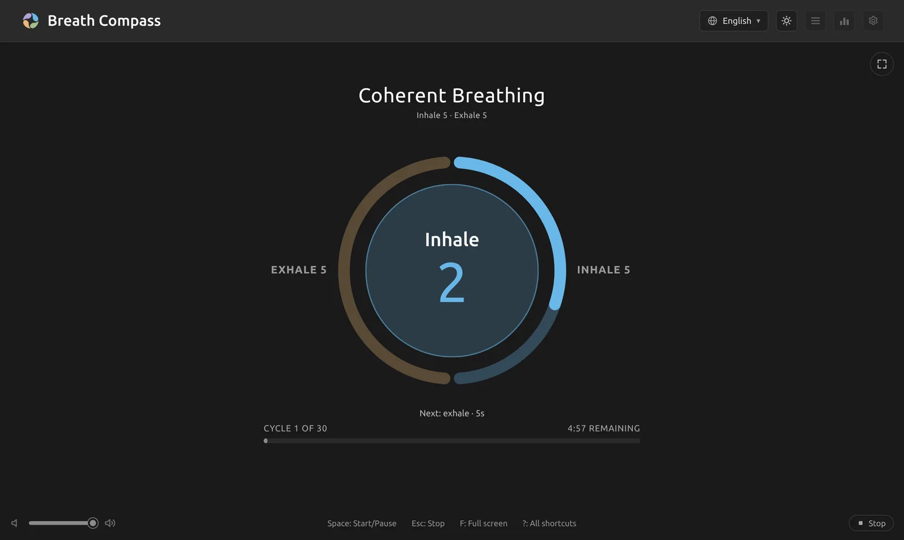
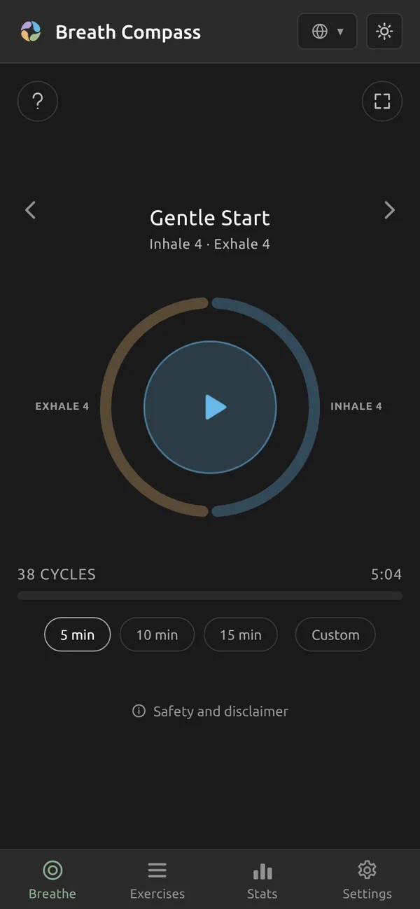

Breathe with the circle
Pick an exercise, press Start and follow the circle as it grows with your inhale and shrinks with your exhale. Free and open source, with no account and no tracking.
For Linux, Windows and macOS, and any modern browser.

Everything for a calm few minutes
Nine built-in exercises, from an easy 4 and 4 to advanced patterns with holds, and room for your own.
Follow the circle
The ring shows each phase in proportion to its length, and the circle breathes with you, with the seconds counting down inside.
Sound that guides you
A bell at each phase, a soft tick every second and optional background music, or a sound that rises and falls with your breath.
Your own exercises
Set the inhale, hold, exhale and pause, the length in minutes and the music. Duplicate a built-in exercise to make a variation.
Statistics and streaks
Minutes this week and month, a daily goal with streaks and a 30-day chart. Only time spent breathing counts.
Sync without an account
On the desktop, keep your data in a folder synced with Syncthing, Nextcloud or Dropbox, and every device shares it.
Private by design
No account, no server, no analytics. Everything stays on your device. The only request is an optional check for updates.
Also: English, French, Portuguese, Romanian and Spanish · dark and light themes · a focus mode and full screen · keyboard shortcuts · a tray icon and daily reminders on the desktop · screen reader support.
On your phone, too
The web version works in any modern browser. On a phone it keeps the screen on during a session, and you can add it to your home screen to open it like an app. Your data stays in the browser.

Download
Free, for every major system. Install it over an older version to update; your data is kept.
Windows
On first launch, choose More info → Run anyway: the installer isn't signed yet.
macOS
On first launch, right-click the app and choose Open: it isn't signed yet.
All files and older versions are on the releases page · Installation notes